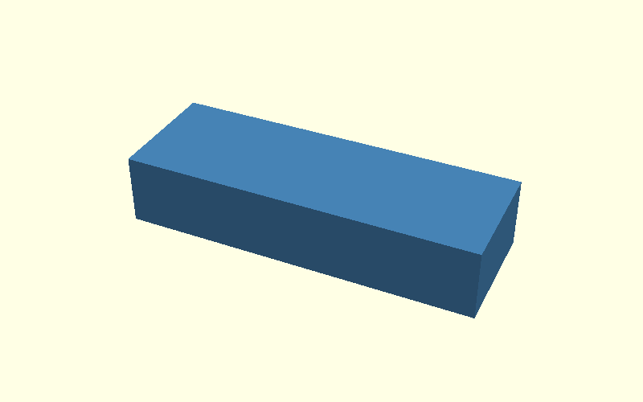
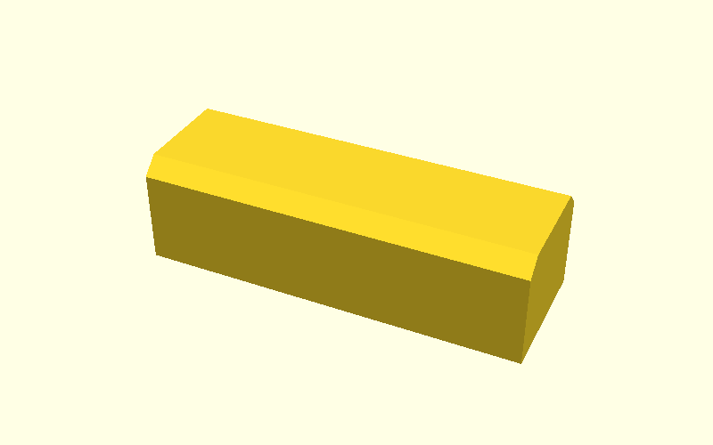
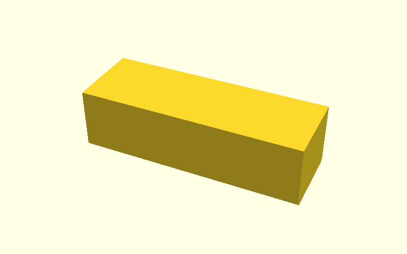
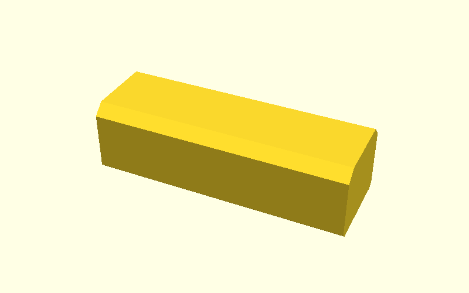

Beam: normal chamfer first, elephant-foot relief second
This example reduces the Corner Bracket idea to one rectangular beam.
The beam has four long edges. The important rule is simple:
- the two upper long edges get the normal chamfer
cs; - the two lower long edges are left sharp during that operation;
- those lower edges are the print-bed edges and get the separate, smaller
elephant-foot relief
efafterwards.
The two end faces stay square on purpose. They are not part of this explanation.
The camera, dimensions and orientation remain the same in every image.
0. Start with the plain beam

All four long edges are sharp.
This is the reference object for the next steps.
1. Apply the normal chamfer cs

The normal chamfer is applied to the two upper long edges.
The two lower edges are deliberately not chamfered here. They still form the sharp print-bed boundary.
So after this step the cross-section is conceptually:
- top-left:
cs; - top-right:
cs; - bottom-left: sharp;
- bottom-right: sharp.
That missing bottom chamfer is intentional, because the print-bed correction uses a different value.
2. Isolate the elephant-foot relief ef

For comparison, this image returns to the plain beam and shows only ef.
The smaller relief is applied to the two lower long edges — exactly the
edges that were left untouched by cs.
This makes the roles of the two parameters visible without mixing them:
cs = normal edge treatment
ef = print-bed edge treatment
3. Combine them

Now both operations are present on the same beam:
- start with the rectangular beam;
- chamfer the two upper long edges with
cs; - keep the bottom edges out of that operation;
- apply the smaller
efrelief to those two bottom edges.
The resulting cross-section therefore has two different bevel sizes for two different purposes.
This is the concept that should then be mapped back onto the real Corner Bracket.
Source
The complete minimal OpenSCAD example is in
scad/hull_operations.scad.
Set scene to 0, 1, 2 or 3 to inspect the same four states
locally.